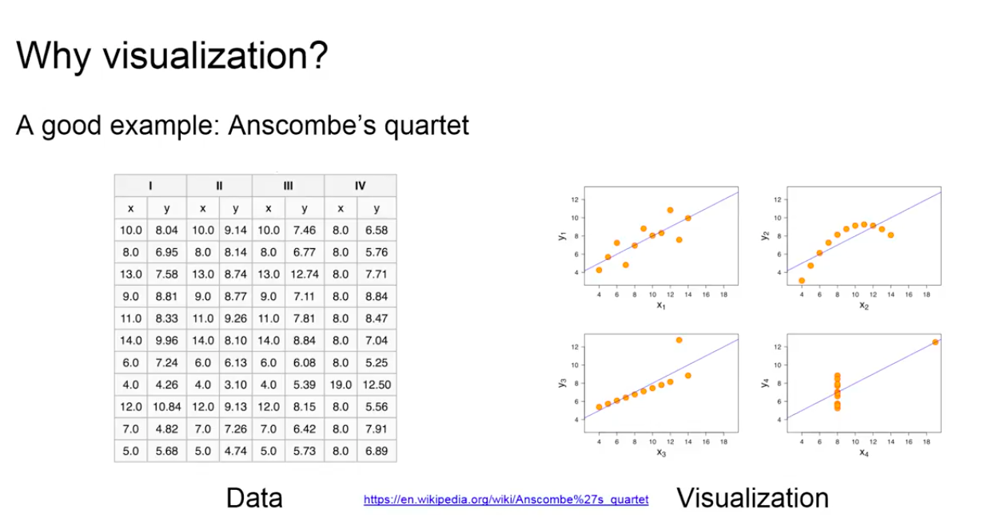

In this part, we're going to discuss data visualization. Now, that we have the data retrieved from an API, we will try and create a nice-looking graph from the character interactions of the Storm of Swords novel.
Technically, all the information that is displayed by visualization is already available in the data itself, but a good example for why visualization is important is the so-called Anscombe's quartet.
You can see it on the left side here. So, what you see is a bunch of data, what you see is that you can't see much at first glance. However, luckily, we have some mathematical tools to analyze these four two-dimensional distributions. However, in this particular case, if you look at the mean distribution and the distribution means of X, they are all exactly the same. The same goes for the variance of the X distribution. And if you look at the Y part of these distributions, they are also very similar to at least two percentage points and even more complex things, such as a linear regression line are almost identical for all these four distributions. So, you would assume that they follow a very similar pattern, that they are even mostly identical. However, as soon as you bring in a visualization of these data points, you will notice that they are vastly different and definitely follow different patterns.
So, this is the reason why visualization is vital for data exploration and by now it has become a very common theme to use visualization on the web, and for that we use JavaScript, obviously. There are a number of JavaScript libraries for web-based data visualization available, such as the ones you can see listed on the left side of the slide. Today, we'll be using D3 and we'll talk a little bit about why we will be using D3 in a minute.
First, let's talk about ways in which we can visualize data in the browser in general. Basically, there are three major ways.
The most simple one are HTML elements. They are actually part of the HTML language. That means, they are supported by any browser. They support all the things that any HTML element will support. That means DOM-handling and events and callbacks would make it really easy to make it responsive and interactive. However, they only support very simple shapes, such as circles and lines, and to create more complex shapes, it takes a lot of effort to get it done. Secondly, a whole different way of creating graphics in a web page are the Canvas and WebGL elements. Now, Canvas and WebGL are different, but these are related, and they work in similar ways. Canvas is for two-dimensional graphics, but WebGL enables three-dimensional graphics in a web browser. And if you have a lot of elements and a lot of shapes to draw, they are very fast. However, they also require a lot of effort to get it done, because every shape needs to be explicitly stated by the user itself. That means that they do not natively support events or callbacks, which makes it very hard to create a very nice interactive experience. They also are based on pixels, like a JPEG or a bitmap picture, for example, which means that they are a resolution-dependent and if you would like to zoom into it, the quality may degrade. The last way to visualize data in the browser is a very common one and these are called scalable vector graphics, also known SVG and they are similar in the way they work to HTML elements. They provide DOM-handling ability, because they are basically part of the HTML file. That means that you can create events and callbacks when clicking on them, which means they are very good for interactive graphs and visualizations. And because SVG doesn't actually place any pixels anywhere, but rather provides a description of how a shape should look like, it's completely resolution-independent. The problem, however, is that if you have a lot of elements and shapes to draw, as in thousands, it can become very slow and we would probably need to move to a WebGL or canvas-based visualization.
Let's talk about why we want to use D3. If you go to the website at d3js.org, you will see that most of the examples are some form of graph or bar chart, or in some other form of craft-based visualization. However, D3 is not just a graphing library, like some of the other ones that we have listed on a few slides ago. It is a more flexible JavaScript library.
It is focused on a more abstract concept of binding arbitrary data to a page element and then applying data-driven transformation to them. And those can be, for example, SVG graphics. They can also be tables or text elements or any other kind of HTML elements. So, the main point for D3 is the way that data binding works with D3 and let's talk about what that actually means.
Data binding in web development refers to the assignment of data to specific elements of a UI or, in our case, a website. So, for example, imagine we have a star shape that is displayed on our website and that has an attribute that is defining its color and we also have a variable in our script that is called star color in this case and it holds the color we want the star to have.
We can now assign the variable to the color attribute of the star, so that they are bound together, meaning that if either the star color variable in our script changes, for example, programmatically, that will also influence the color of the star on the website immediately and vice versa as well. If the star color on the website is, for example, through user interaction influenced, this will be reflected in our code and data as well. So, the code and UI are kept consistent across changes and D3 uses this as its central working paradigm.
D3 allows the user to bind arbitrary data to the document object model, for example, when providing graph data to create an SVG visualization.
And now, I have already mentioned the document object model or DOM a couple of times. So, in the next part of this course, we will talk about what it actually means and will also look into scalable vector graphics before we go on to actually create a graph using D3.